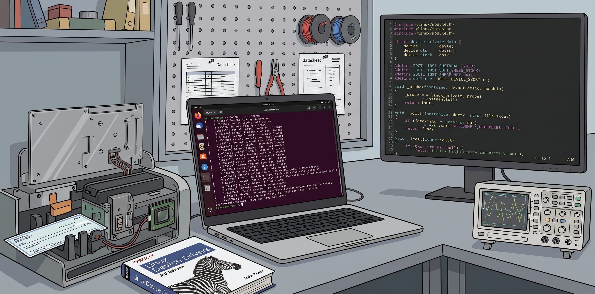
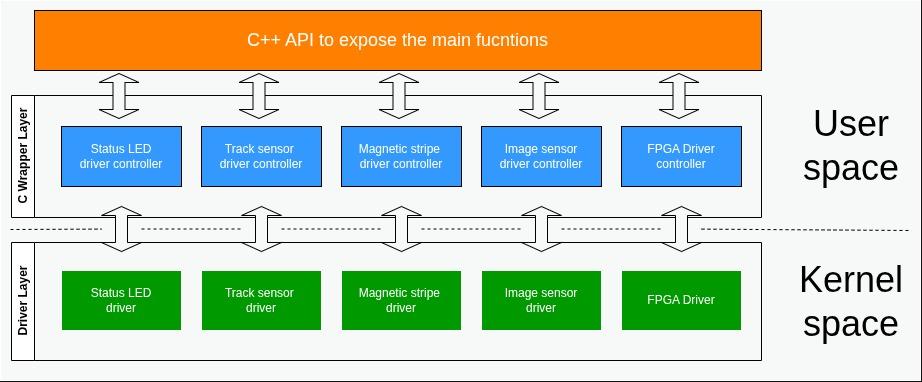

Linux Device Driver Development for Standalone Cheque Scanner Machine - Internship Project at Zone24x7 (Pvt) Ltd

In 2019, as part of the industrial training program of my degree in the Department of Computer Science and Engineering at the University of Moratuwa, where I had specialized in embedded systems engineering, I was selected as a Trainee Associate Electronics Engineer in the Embedded Systems Division at Zone24x7 (Pvt) Ltd for the university's six-month internship program. Looking back seven years later, it remains one of the better decisions I've made in my career: not just for the technical ground I covered, but for the people I got to learn from.
My original notes are no longer with me, so I'm excitedly putting this together from memory while I still can! Better to document it now rather than let my memories about the project fade into the void forever! 🫠
Before anyone was assigned to a teams, all interns in the division went through a formal induction built around a small firmware development exercise on an STM32 development board. The intent, as best I understood it at the time, was less about the specific peripheral exercises and more about calibrating everyone to the same baseline, working with C language, register-level thinking, toolchain familiarity, and the discipline of reading a datasheet before writing a line of code. It was a sensible on-ramp before being let loose on production codebases.
Once the induction was complete, interns were assigned to projects based on their preference. I chose device driver development for a standalone cheque scanner machine, built around a Xilinx Zynq-7000 series SoC. The Zynq's dual architecture, an ARM Cortex-A9-based Processing System (PS) coupled with FPGA programmable logic (PL) on the same die, gave the project both a Linux-facing software side and a hardware-facing FPGA side, which was exactly the kind of full-stack embedded exposure I was looking for. However, I worked only on device driver development.
I worked alongside three teammates (I would rather say they are an elite team in electronics 😉), whose guidance shaped how I think about embedded software to this day. It's worth noting this was 2019 — pre-generative AI era. My references were numerous datasheets, tutorials, Stack Overflow and a small number of YouTube channels (Specially BOPV) that covered embedded Linux and Yocto in real depth.
System architecture

Modular architecture of the system
At a high level, the system was in a moduler layeres as follows:
- Kernel space: individual character device drivers, one per peripheral, each exposing a /dev node.
- Userspace controller layer (C wrappers): per-driver controller components responsible for talking to their corresponding kernel driver via ioctl() and standard file operations (open, read, write, close).
- C++ API layer: a thin abstraction on top of the userspace controllers, exposing only the functions the application layer actually needed, so that application logic never had to know it was ultimately talking to a character device and issuing ioctl calls underneath.
Each hardware peripheral was isolated behind its own driver and controller pair, and the C++ API gave the rest of the system a stable interface regardless of what was happening underneath at the driver level. All driver development on this project was done exclusively with character device drivers since every peripheral was fundamentally a stream of discrete reads, writes, and control operations.
My responsibilities
My work on the project fell into a few distinct threads:
- Yocto Project setup and knowledge transfer: I set up the Yocto build environment for the target device, learned the fundamentals of layers, recipes, and BitBake build system from zero, and then ran a knowledge-transfer session for the rest of the team so the setup wasn't a single point of knowledge.
- Recipe and integration work to bring the kernel-space drivers and userspace controllers into the build, wiring the userspace side to actually talk to the kernel drivers correctly.
- The basic C++ API layer described above.
- Individual device driver development for five peripherals: the status LED, track sensors, magnetic stripe reader, image sensor, and the FPGA register interface.
Drivers implemented
Status LED driver
The machine had a single status LED, and the job was to communicate machine state to the operator entirely through blink patterns on that one LED, a classic embedded constraint of doing a lot with very little UI. We defined a set of machine states and implemented distinguishable blink patterns for each. The current state was exposed to userspace through an ioctl() interface; internally, the driver drove the LED by direct GPIO access.
Track sensor driver
The scanner used two track sensors to determine the position of a cheque bill as it moved through the transport path. Each track sensor was a simple IR emitter/detector pair: an IR LED and a phototransistor (or similar receiver) positioned opposite each other, with the cheque passing between them. When the cheque interrupted the beam, the sensor's output went low, giving a discrete, edge-triggered signal that told the system a cheque had reached that point in the transport path. Sensor state and events were communicated to userspace via ioctl(), the same pattern used across the other drivers.
Magnetic stripe reader driver
This driver handled reads from the magnetic stripe on bank cards. When a card's stripe passed through the reader's slot, the driver captured the encoded track data into a buffer and passed it up to the userspace controller layer. For anyone unfamiliar with the underlying format — and worth restating here since it's genuinely relevant to how this driver had to be structured — magnetic stripe cards conforming to the ISO/IEC 7811 and ISO/IEC 7813 family of standards carry up to three tracks:
| Track | Origin | Recording density | charactor encoding | Max content |
|---|---|---|---|---|
| Track 1 | IATA | 210bpi | 7-bit alphanumeric | Maximum content |
| Track 2 | ABA | 75bpi | 5-bit numeric | Up to 40 characters — PAN, expiration date, service code, discretionary data |
| Track 3 | Thrift/ISO 4909 | 210bpi | 5-bit numeric | Up to 107 characters — read-write track, mostly deprecated in modern financial cards |
Modern financial-transaction card readers typically only need Track 1 and/or Track 2 — dual-track readers are common precisely so the account data can be cross-validated between tracks, or so the system can fall back to the lower-density Track 2 if Track 1 is damaged or unreadable. Track 3 was historically read-write and used in some transit and access-control applications, but it's essentially obsolete in banking contexts today. The test card given to me was with only 2 tracks as I can recall.
Image sensor driver
The image sensor's job was to capture a colour image of the cheque bill as it passed through the scanner. The broader scan sequence — motor control timed against the track sensor signals to move the cheque through the optical path — was implemented by other members of the team; my scope was the image sensor driver itself: basic image capture functionality and forwarding the captured image data to the upper layers. The system supported three image quality settings, and, from what I recall, resolution and scan speed were selected jointly based on which quality level was chosen — a fairly standard trade-off in line-scan or flatbed-style document imaging, where higher resolution capture at a fixed sensor readout rate forces either a slower transport speed or a reduction in captured detail.
FPGA driver
The final driver interfaced with the FPGA fabric on the Zynq's programmable logic side. My task here was narrower than the others: reading and writing to a defined set of registers via ioctl(), most likely memory-mapped registers exposed by custom logic in the PL and accessed from the PS side through the AXI interconnect, in the typical Zynq PS-PL register-access pattern.
Best practices I picked up
Beyond the general best practices you'd expect on any serious C codebase, three specific conventions from this project have stayed with me:
Single point of return
Rather than returning from multiple points inside a function, declare the return value as a variable at the top of the function, assign to it at the relevant points in the control flow, and return it once at the end. This makes it much easier to reason about what a function can return and simplifies adding cleanup logic later without hunting for every exit point.
int function(int param){
int retval = ERROR;
...
if(some condition) {
...
retval = SUCCESS;
}
if(some other condition) {
...
retval = SOME_SPECIFIC_ERROR;
}
...
return retval;
}
Yoda conditions for comparisons
Writing comparisons with the constant on the left, if (CONSTANT == variable) rather than if (variable == CONSTANT), so that an accidental single = becomes a compile-time error (assignment to a constant) instead of a silent logic bug that only shows up at runtime, often after an unpleasant debugging session hours may be days.
Mock while loops
do { ... } while (0) as a single-exit control structure. In functions with complex, multi-stage error handling, wrapping the body in a do { ... } while (0) loop that's never actually intended to iterate lets you break out at any failure point to a single cleanup/return location, in the same spirit as the single-return-point convention above. It's a common idiom in kernel and embedded C for exactly this reason — it avoids deeply nested if/else chains while still giving you one clean exit path.
int example_function(void)
{
int ret = 0;
do {
if (step_one() != 0) {
ret = -EINVAL;
break;
}
if (step_two() != 0) {
ret = -EIO;
break;
}
ret = step_three();
} while (0);
return ret;
}
Closing thoughts
Six months in the project gave me something a classroom project structurally can't: exposure to how embedded software actually gets built when there's real hardware, a real team, and real review processes involved — from bringing up a Yocto build from nothing, through writing kernel-space drivers against physical sensors, to the small disciplined habits that make C code maintainable at scale. It's also, not incidentally, where I first got a real feel for the Zynq architecture and the PS–PL boundary, which has stuck with me well beyond this specific project.